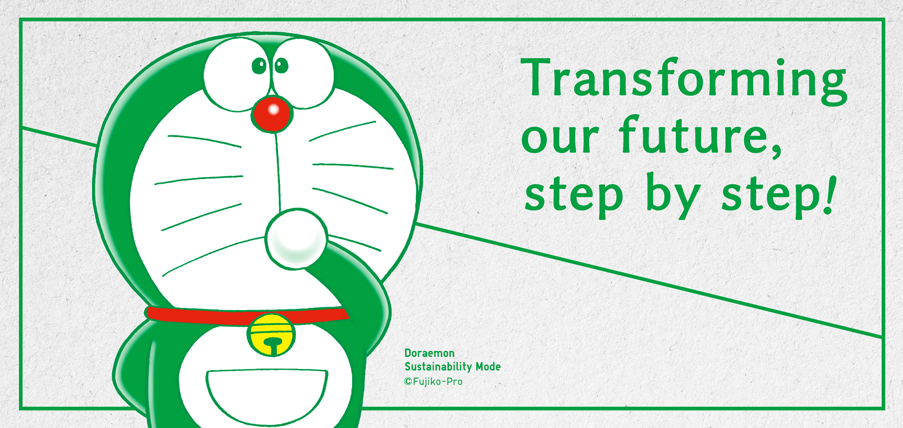

|
|
| Изменение
нашего будущего посредством силы одежды
|
 |
Любимый на протяжении полувека
робот-кошка Дораэмон пришел из будущего и присоединился
к UNIQLO в качестве глобального представителя
устойчивого развития. Он здесь, чтобы помочь нам сделать
мир лучше для всех с помощью одежды.
Более 20 лет
UNIQLO идет по пути устойчивого развития. Как глобальная
компания, создающая ответственную одежду, мы стремимся к
здоровью планеты, общества и людей. Земля и человечество
столкнулись с серьезными проблемами. Мы считаем, что
сейчас настало время предпринять быстрые и решительные
действия для решения этих проблем — пока не стало
слишком поздно.
Вместе наши маленькие шаги приведут
к большим изменениям. Присоединяйтесь к нашему новому
послу Дораэмону в стремлении к экологичности и помогите
изменить наше будущее, шаг за шагом!
Готовы ли вы
перейти в режим устойчивого развития |
|
|